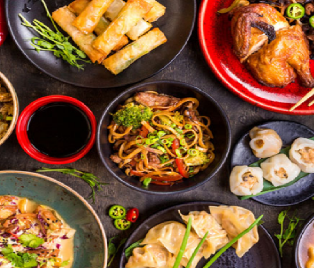

Welcome to Our Recipe Website |
||||
Discover and enjoy delicious dishes |
||||
|  |
Welcome, food enthusiasts! Explore the rich tapestry of authentic
Chinese cuisine with us as we embark on a culinary journey beyond the
familiar favorites. While your go-to General Tso's may hit the spot,
there's a whole world of flavors waiting to be discovered. In a country as vast and diverse as China, culinary traditions vary from region to region, offering a treasure trove of unique dishes. If you've ever felt overwhelmed by the prospect of navigating traditional Chinese food, fear not! We've delved into the heart of this culinary landscape, consulted with experts, and curated the perfect starting point for newcomers. Get ready to expand your palate and discover the true essence of Chinese gastronomy. Join us as we unveil the best introductory recipes that will not only satisfy your taste buds but also open the door to a world of authentic culinary delights. Let's dive into the art of Chinese cooking together! |
|||
Recipe Catalogue |
Contact |
|||